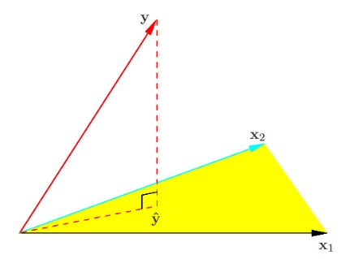
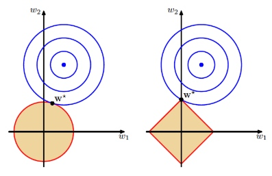

所属 Topic：机器学习 · 类型：方法
回归模型#
进入统计机器学习大门，最基础的从回归分析说起。
1.回归分析#
机器学习从最简单的回归分析说起，这次从最小二乘的几何意义角度去看回归分析。
$Y = X’B$
我们知道最终估计的满足 (y-X\hat\beta)^TX=0。即最优估计是在空间上的正交投影

统计中的一些基本概念：
- t 检验
- F 检验
- p value
- 多重共线性
详细的介绍可以参考统计学中的回归分析
2.正则化处理#
训练数据是有限的时候，总可以通过增加参数的方法提高模型复杂度，降低训练误差，但是其泛化能力不好。正则化即通过调整参数的取值，来平衡**偏差**和**方差**的关系。
线性回归中，最直接的方法就行在loss function中添加正则化项。一般形式如下：
- 当取一范数时，即为lasso；
- 二范数：岭回归
- 一范数和二范数组合：弹性网络。 a||w||^2_2 + (1-a)||w||_1
一范数和二范数的几何意义区别如下(这里就不解释了)：
- lasso会将特征衰减到0
- 岭回归大量特征系数都比较小
- 弹性网络结合了两种方法的优点

从概率不同学派的角度来看上面的问题。
正则化的方式，是从频率学派角度来看；而贝叶斯学派视角来看，正则化其实就是引入了关于参数的先验信息。
贝叶斯学派是假定参数服从某种分布，然后根据其分布利用积分的方法将其消除掉。这一过程叫**边际化**。边际化的过程其实恰好是正则化/泛化的过程。
可以证明，岭回归是w满足正态分布，lasso是当w满足拉普拉斯分布时候通过最大后验概率得到的估计结果。
code
import numpy as np # 快速操作结构数组的工具
import matplotlib.pyplot as plt # 可视化绘制
from sklearn.linear_model import Lasso,LassoCV,LassoLarsCV # Lasso回归,LassoCV交叉验证实现alpha的选取，LassoLarsCV基于最小角回归交叉验证实现alpha的选取
# ========Lasso回归========
model = Lasso(alpha=0.01) # 调节alpha可以实现对拟合的程度
# model = LassoCV() # LassoCV自动调节alpha可以实现选择最佳的alpha。
# model = LassoLarsCV() # LassoLarsCV自动调节alpha可以实现选择最佳的alpha
model.fit(X, y) # 线性回归建模
print('系数矩阵:\n',model.coef_)
print('线性回归模型:\n',model)
# print('最佳的alpha：',model.alpha_) # 只有在使用LassoCV、LassoLarsCV时才有效
# 使用模型预测
predicted = model.predict(X)
3.广义线性模型#
广义线性模型可以看做一般线性模型的推广，既然说他是推广，说明有一些问题是传统的线性模型没法解决的。
广义线性模型中y的密度函数形式是基于指数分布族的$p(y;\theta)=b(y)exp[\theta'T(y)+a(\theta)]$
其中T(y)是一个充分统计量，通常可以等于y。 常见的正态分布、指数分布、二项分布、泊松分布都属于指数分布族，都可以转为这种形式。
介绍一个常用的广义线性模型：
xxx
4.基函数扩展：属性的非线性化#
线性模型的表达能力有限，前面广义线性模型的思路是将因变量y做了一个非线性映射。而从另一个角度，可以将解释变量变为非线性的，即
$y=\beta_0+\beta_1x_1 + ...+\beta_nx_n$
可以扩展为**基函数扩展模型**
$y=\beta_0+\beta_1f(x_1) + ...+\beta_nf(x_n)$
比如常见的多项式回归$y=\beta_0+\beta_1 x + ...+\beta_n x^n$
多项式回归会存在一些问题：
- x和x^k之间是相关的，不太好解释清楚每个变量的贡献程度
- 会出现过拟合的情况
多元自适应回归样条MARS
- 多项式整体是线性，局部非非线性
- MARS: 整体是非线性，局部是线性(分段函数)
样条函数，需要满足一些最基本的一些条件
- 在knot节点处满足函数的连续性
- 一阶导数连续，二阶导数连续，则称为三次样条
平滑样条
code: patsy